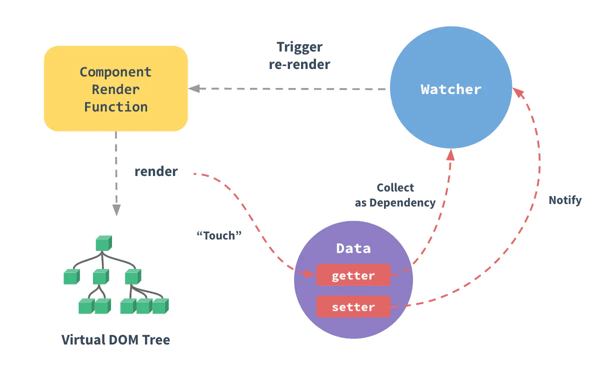
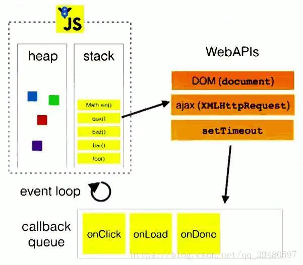

nextTick nextTick的使用 vue中dom的更像并不是实时的，当数据改变后，vue会把渲染watcher 添加到异步队列，异步执行，同步代码执行完成后再统一修改dom，我们看下面的代码。
1 2 3 4 5 6 7 8 9 10 11 12 13 14 15 16 17 <template> <div class "box" >{{msg}}</div> </ template>export default { name: 'index' , data () { return { msg: 'hello' } }, mounted () { this .msg = 'world' let box = document .getElementsByClassName('box' )[0 ] console .log(box.innerHTML) } }
可以看到，修改数据 后并不会立即更新dom ，dom的更新是异步 的，无法通过同步代码获取，需要使用nextTick ，在下一次事件循环中获取。
1 2 3 4 5 this .msg = 'world' let box = document .getElementsByClassName('box' )[0 ]this .$nextTick(() => console .log(box.innerHTML) })
如果我们需要获取数据更新后的dom信息，比如动态获取宽高、位置信息等，需要使用nextTick
数据变化dom更新与nextTick的原理分析 数据变化 vue双向数据绑定依赖于ES5的Object.defineProperty，在数据初始化的时候，通过Object.defineProperty为每一个属性创建getter与setter，把数据变成响应式数据。对属性值进行修改操作时，如this.msg = world，实际上会触发setter。下面看源码，为方便越读，源码有删减。

数据改变触发set函数
1 2 3 4 5 6 7 8 9 10 11 12 13 14 15 16 Object .defineProperty(obj, key, { enumerable: true , configurable: true , set : function reactiveSetter (newVal) { const value = getter ? getter.call(obj) : val if (getter && !setter) return if (setter) { setter.call(obj, newVal) } else { val = newVal } childOb = !shallow && observe(newVal) dep.notify() } })
执行dep.notify方法
1 2 3 4 5 6 7 8 9 10 11 12 13 export default class Dep constructor () { this .id = uid++ this .subs = [] } notify () { const subs = this .subs.slice() for (let i = 0 , l = subs.length; i < l; i++) { subs[i].update() } } }
当数据被引用时，如<div></div> ，会执行get方法，并向subs数组中添加渲染Watcher，当数据被改变时执行Watcher的update方法执行数据更新。
1 2 3 4 5 6 7 8 9 10 update () { if (this .lazy) { this .dirty = true } else if (this .sync) { this .run() } else { queueWatcher(this ) } }
update 方法最终执行queueWatcher
1 2 3 4 5 6 7 8 9 10 11 12 13 14 15 16 17 18 19 20 21 22 23 24 function queueWatcher (watcher: Watcher ) const id = watcher.id if (has[id] == null ) { has[id] = true if (!flushing) { queue.push(watcher) } else { let i = queue.length - 1 while (i > index && queue[i].id > watcher.id) { i-- } queue.splice(i + 1 , 0 , watcher) } if (!waiting) { waiting = true nextTick(flushSchedulerQueue) } } }
执行flushSchedulerQueue方法
1 2 3 4 5 6 7 8 9 10 11 12 13 14 15 16 17 18 19 function flushSchedulerQueue ( currentFlushTimestamp = getNow() flushing = true let watcher, id ... for (index = 0 ; index < queue.length; index++) { watcher = queue[index] if (watcher.before) { watcher.before() } id = watcher.id has[id] = null watcher.run() } resetSchedulerState() ... }
也就是说当数据变化最终会把flushSchedulerQueue传入到nextTick中执行flushSchedulerQueue函数会遍历执行watcher.run()方法，watcher.run()方法最终会完成视图更新，接下来我们看关键的nextTick方法到底是啥
nextTick nextTick方法会被传进来的回调push进callbacks数组，然后执行timerFunc方法
1 2 3 4 5 6 7 8 9 10 11 12 export function nextTick (cb?: Function, ctx?: Object ) let _resolve callbacks.push(() => cb.call(ctx) }) if (!pending) { pending = true timerFunc() } }
来看看timerFunc
1 2 3 4 5 6 7 8 9 10 11 12 13 14 15 16 17 18 19 20 21 22 23 24 25 26 27 28 29 30 31 32 33 34 35 36 37 38 39 40 41 42 43 44 45 46 47 48 49 50 51 let timerFuncif (typeof Promise !== 'undefined' && isNative(Promise )) { const p = Promise .resolve() timerFunc = () => p.then(flushCallbacks) if (isIOS) setTimeout(noop) } isUsingMicroTask = true } else if (!isIE && typeof MutationObserver !== 'undefined' && ( isNative(MutationObserver) || MutationObserver.toString() === '[object MutationObserverConstructor]' )) { let counter = 1 const observer = new MutationObserver(flushCallbacks) const textNode = document .createTextNode(String (counter)) observer.observe(textNode, { characterData: true }) timerFunc = () => counter = (counter + 1 ) % 2 textNode.data = String (counter) } isUsingMicroTask = true } else if (typeof setImmediate !== 'undefined' && isNative(setImmediate)) { timerFunc = () => setImmediate(flushCallbacks) } } else { timerFunc = () => setTimeout(flushCallbacks, 0 ) } } function flushCallbacks ( pending = false const copies = callbacks.slice(0 ) callbacks.length = 0 for (let i = 0 ; i < copies.length; i++) { copies[i]() } }
可以看出timerFunc的定义优先顺序macroTask <-- microTask，在没有Dom的环境中，使用microTask，比如weex
setImmediate、MessageChannel VS setTimeout
我们是优先定义 setImmediate、MessageChannel为什么要优先用他们创建而不是setTimeout？setTimeout的最小时间延迟是4ms，也就是说理想环境下异步回调最快也是4ms才能触发。Vue使用这么多函数来模拟异步任务，其目的只有一个，就是让回调异步且尽早调用。而MessageChannel 和 setImmediate 的延迟明显是小于setTimeout的
现在有这样的一种情况，mounted的时候test的值会被++循环执行1000次。 每次++时，都会根据响应式触发setter->Dep->Watcher->update->run。 如果这时候没有异步更新视图，那么每次++都会直接操作DOM更新视图，这是非常消耗性能的。 所以Vue实现了一个queue队列，在下一个Tick（或者是当前Tick的微任务阶段）的时候会统一执行queue中Watcher的run。同时，拥有相同id的Watcher不会被重复加入到该queue中去，所以不会执行1000次Watcher的run。最终更新视图只会直接将test对应的DOM的0变成1000。 保证更新视图操作DOM的动作是在当前栈执行完以后下一个Tick（或者是当前Tick的微任务阶段）的时候调用，大大优化了性能。
nextTick会优先使用microTask, 其次是macroTask 。
也就是说nextTick中的任务，实际上会异步执行，nextTick(callback)类似于Promise.resolve().then(callback)，或者setTimeout(callback, 0)。
也就是说vue的视图更新 nextTick(flushSchedulerQueue)等同于setTimeout(flushSchedulerQueue, 0)，会异步执行flushSchedulerQueue函数，所以我们在this.msg = hello 并不会立即更新dom。
要想在dom更新后读取dom信息，我们需要在本次异步任务创建之后创建一个异步任务 。

如果我们在数据修改前nextTick ，那么我们添加的异步任务会在渲染的异步任务之前执行，拿不到更新后的dom。
1 2 3 4 5 6 7 8 9 10 11 12 13 14 15 16 17 18 19 20 <template> <div class "box" >{{msg}}</div> </ template><script> export default { name: 'index' , data () { return { msg: 'hello' } }, mounted () { this .$nextTick(() => console .log(box.innerHTML) }) this .msg = 'world' let box = document .getElementsByClassName('box' )[0 ] } }
总结 vue为了保证性能，会把dom修改添加到异步任务，所有同步代码执行完成后再统一修改dom，一次事件循环中的多次数据修改只会触发一次watcher.run()。也就是通过nextTick，nextTick会优先使用microTask创建异步任务。vue项目中如果需要获取修改后的dom信息，需要通过nextTick在dom更新任务之后创建一个异步任务。如官网所说，nextTick会在下次 DOM 更新循环结束之后执行延迟回调。